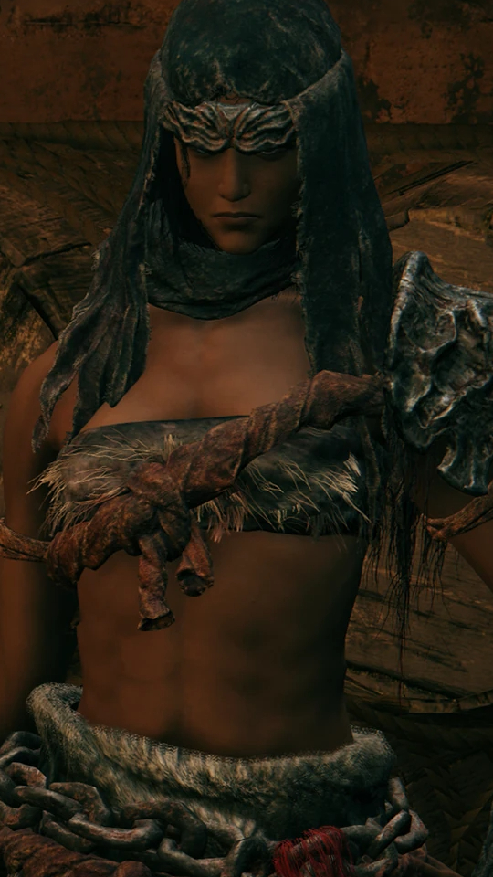

Varré da Máscara Branca
Localização inicial: Limgrave, o primeiro passo
Yura, Caçador de Dedos Sangrentos
Localização inicial: Limgrave, perto de ruínas à beira-mar
Melina
Localização inicial: Limgrave, porta de entrada
Roderika
Localização inicial: Limgrave, Barraco Stormhill
Alexander, o Jarro Guerreiro
Localização inicial: Limgrave, Ponte dos Santos

Nepheli Loux
Localização inicial: Limgrave, Castelo Tempesvéu
D, Caçador dos Mortos
Localização inicial: Limgrave, perto do Vilarejo Summonwater
Millicent
Localização inicial: Caelid, Igreja da Peste
Gurranq, Clérigo Bestial
Localização inicial: Caelid, Santuário Bestial
Jerren
Localização inicial: Caelid, norte da Praça do Castelo da Juba Vermelha

Blaidd, o Meio-Lobo
Localização inicial: Limgrave, Ruínas de Mistwood
Hyetta
Localização inicial: Liurnia dos Lagos, Penhascos de frente para o lago
Ranni, a Bruxa
Localização inicial: Liurnia dos Lagos, a Ascensão de Ranni
Patches
Localização inicial: Limgrave, Caverna de águas turvas
Sir Gideon Ofnir, o Sabe-Tudo
Localização inicial: Mesa Redonda
Tanith
Localização inicial: Monte Gelmir, Mansão Vulcânica
Fia, Companheira do Leito de Morte
Localização inicial: Mesa Redonda
Irmão Corhyn
Localização inicial: Mesa Redonda